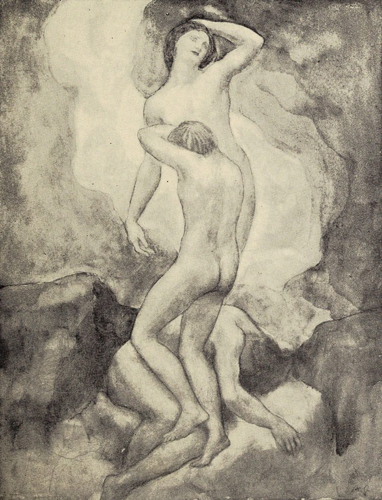

12On Crime and Punishment
Then one of the judges of the city stood forth and said, Speak to us of Crime and Punishment.
And he answered, saying:
It is when your spirit goes wandering upon the wind,
That you, alone and unguarded, commit a wrong unto others and therefore unto yourself.
And for that wrong committed must you knock and wait a while unheeded at the gate of the blessed.
Like the ocean is your god-self;
It remains for ever undefiled.
And like the ether it lifts but the winged.
Even like the sun is your god-self;
It knows not the ways of the mole nor seeks it the holes of the serpent. But your god-self dwells not alone in your being.
Much in you is still man, and much in you is not yet man,
But a shapeless pigmy that walks asleep in the mist searching for its own awakening.
And of the man in you would I now speak.
For it is he and not your god-self nor the pigmy in the mist, that knows crime and the punishment of crime.
Oftentimes have I heard you speak of one who commits a wrong as though he were not one of you, but a stranger unto you and an intruder upon your world.
But I say that even as the holy and the righteous cannot rise beyond the highest which is in each one of you,
So the wicked and the weak cannot fall lower than the lowest which is in you also.
And as a single leaf turns not yellow but with the silent knowledge of the whole tree, So the wrong-doer cannot do wrong without the hidden will of you all.
Like a procession you walk together towards your god-self.

You are the way and the wayfarers.
And when one of you falls down he falls for those behind him, a caution against the stumbling stone.
Ay, and he falls for those ahead of him, who though faster and surer of foot, yet removed not the stumbling stone.
And this also, though the word lie heavy upon your hearts:
The murdered is not unaccountable for his own murder,
And the robbed is not blameless in being robbed.
The righteous is not innocent of the deeds of the wicked,
And the white-handed is not clean in the doings of the felon.
Yea, the guilty is oftentimes the victim of the injured,
And still more often the condemned is the burden bearer for the guiltless and unblamed.
You cannot separate the just from the unjust and the good from the wicked;
For they stand together before the face of the sun even as the black thread and the white are woven together.
And when the black thread breaks, the weaver shall look into the whole cloth, and he shall examine the loom also.
If any of you would bring to judgment the unfaithful wife,
Let him also weigh the heart of her husband in scales, and measure his soul with measurements.
And let him who would lash the offender look unto the spirit of the offended.
And if any of you would punish in the name of righteousness and lay the ax unto the evil tree, let him see to its roots;
And verily he will find the roots of the good and the bad, the fruitful and the fruitless, all entwined together in the silent heart of the earth.
And you judges who would be just,
What judgment pronounce you upon him who though honest in the flesh yet is a thief in spirit?
What penalty lay you upon him who slays in the flesh yet is himself slain in the spirit?
And how prosecute you him who in action is a deceiver and an oppressor,
Yet who also is aggrieved and outraged?
And how shall you punish those whose remorse is already greater than their misdeeds?
Is not remorse the justice which is administered by that very law which you would fain serve?
Yet you cannot lay remorse upon the innocent nor lift it from the heart of the guilty.
Unbidden shall it call in the night, that men may wake and gaze upon themselves. And you who would understand justice, how shall you unless you look upon all deeds in the fullness of light?
Only then shall you know that the erect and the fallen are but one man standing in twilight between the night of his pigmy-self and the day of his god-self, And that the corner-stone of the temple is not higher than the lowest stone in its foundation.